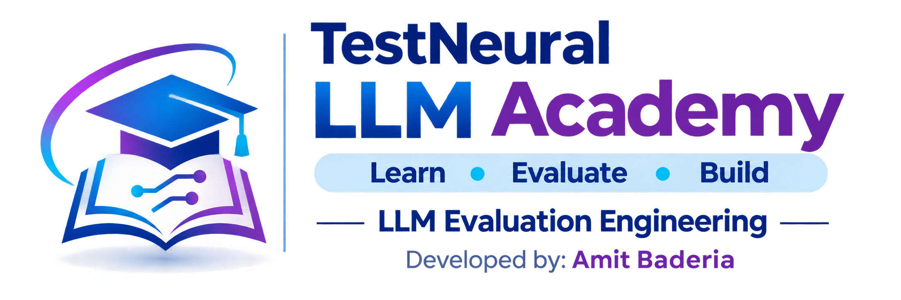

Quick Learning
Learn what you need. Skip what you don't.
Choose a goal. Follow its required topics, practice with the exercises, and verify your work against the checkpoints.
Explore Quick LearningFeatured course
Learn to design evaluations, diagnose failures, and turn test results into decisions about prompts, retrieval, agents, and production releases.

Learn what you need. Skip what you don't.
Choose a goal. Follow its required topics, practice with the exercises, and verify your work against the checkpoints.
Explore Quick LearningFrom beginner to advanced evaluation engineering.
Follow 238h of core study through foundations, practical evaluation, and production. Add 54h 30m of electives if they fit your goals.
Explore Complete CourseEstimates include required topics. Recommended extensions are listed separately in each plan.
34h learner time · 8 topics
Translate an evaluation goal into checks, references and human review.
Open learning plan34h 30m learner time · 7 topics
Design and calibrate pointwise and pairwise judges on the same saved answers.
Open learning plan28h learner time · 5 topics
Measure retrieval, source support and answer correctness separately.
Open learning plan27h learner time · 5 topics
Evaluate tool use, task completion, final state and recovery from saved traces.
Open learning plan78h learner time · 15 topics
Turn reproducible evaluation evidence into ongoing release and monitoring decisions.
Open learning planUse the optional preparation checklist (7h) for Python, JSON, API basics, and scoring, then work through the beginner topics.
Begin with preparationReview the curriculum, prerequisites, and completion criteria. Topic entries distinguish available examples from planned teaching material.
View curriculum overviewBrowse the existing examples, then run Python exercises separately in a local environment.